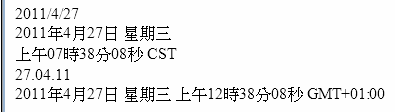
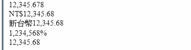
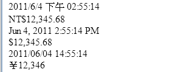

JSTL的格式標籤可以讓你針對數字、日期與時間，搭配地區設定或指定的格式來進行格式化，也可以進行數字、日期與時間的剖析，以日期、時間格式化為例：
<%@ page contentType="text/html; charset=UTF-8" pageEncoding="UTF-8"%>
<%@taglib prefix="fmt" uri="http://java.sun.com/jsp/jstl/fmt"%>
<jsp:useBean id="now" class="java.util.Date"/>
<!DOCTYPE html PUBLIC "-//W3C//DTD HTML 4.01 Transitional//EN"
"http://www.w3.org/TR/html4/loose.dtd">
<html>
<head>
<meta http-equiv="Content-Type"
content="text/html; charset=UTF-8">
</head>
<body>
<fmt:formatDate value="${now}"/><br>
<fmt:formatDate value="${now}" dateStyle="full"/><br>
<fmt:formatDate value="${now}"
type="time" timeStyle="full"/><br>
<fmt:formatDate value="${now}" pattern="dd.MM.yy"/><br>
<fmt:timeZone value="GMT+1:00">
<fmt:formatDate value="${now}" type="both"
dateStyle="full" timeStyle="full"/><br>
</fmt:timeZone>
</body>
</html>
<fmt:formatDate>預設用來格式化日期，可根據不同的地區設定來呈現不同的格式，這個範例並沒有指定地區設定，所以會根據瀏覽器的Accept-Language標頭來決定地區。
dateStyle
屬性用來指定日期的詳細程度，可設定的值有"default"、"short"、"medium"、"long"、"full"，如果想顯示時間，則要在
type屬性上指定"time"或"both"，預設是"date"，timeStyle屬性用來指定時間的詳細程度，可設定的值同樣有
"default"、"short"、"medium"、"long"、"full"。
pattern屬性則可自訂格式，格式的指定方式與java.text.SimpleDateFormat的指定方式相同，可參考SimpleDateFormat的API文件說明。
<fmt:timeZone>可指定時區，可使用字串或java.util.TimeZone物件指定，字串指定的方式，可參考TimeZone的API文件說明，如果需要全域的時區指定，則可以使用<fmt:setTimeZone>標籤，<fmt:formateDate>本身亦有個timeZone屬性可以進行時區設定，也可以透過屬性範圍或Config物件來設定，屬性名稱、常數名稱與會套用時區設定的標籤如下表所示：
屬性名稱前置
|
javax.servlet.jsp.jstl.fmt.timeZone
|
Java常數
|
Config.FMT_TIMEZONE
|
設置型態
|
java.util.TimeZone或String
|
由哪個標籤設置
|
<fmt:setTimeZone>
|
被哪些標籤使用
|
<fmt:formatDate>、 <fmt:parseDate>
|
下圖為範例的執行結果：

接著來看一些數字格式化的例子：
<%@ page contentType="text/html; charset=UTF-8" pageEncoding="UTF-8"%>
<%@taglib prefix="fmt" uri="http://java.sun.com/jsp/jstl/fmt"%>
<jsp:useBean id="now" class="java.util.Date"/>
<!DOCTYPE html PUBLIC "-//W3C//DTD HTML 4.01 Transitional//EN"
"http://www.w3.org/TR/html4/loose.dtd">
<html>
<head>
<meta http-equiv="Content-Type"
content="text/html; charset=UTF-8">
</head>
<body>
<fmt:formatNumber value="12345.678"/><br>
<fmt:formatNumber value="12345.678" type="currency"/><br>
<fmt:formatNumber value="12345.678"
type="currency" currencySymbol="新台幣"/><br>
<fmt:formatNumber value="12345.678" type="percent"/><br>
<fmt:formatNumber value="12345.678" pattern="#,#00.0#"/>
</body>
</html>
<fmt:formatNumber>預設用來格式化數定，可根據不同的地區設定來呈現不同的格式，這個範例並沒有指定地區設定，所以會根據瀏覽器的Accept-Language標頭來決定地區。
type屬性可設定的值有"number"（預設）、"currency"、"percent"，指定"currency"時會將數字依貨幣格式進行格式
化，currencySymbol屬性可指定貨幣符號，type指定為"percent"時，會以百分比格式進行格式化，也可以指定pattern屬性，
指定格式的方式與java.text.DecimalFormat的說明相同，可參考DecimalFormat的API文件說明。
下圖為範例的執行結果：

<fmt:parseDate>與<fmt:parseNumber>則是用來剖析日期，可以在value屬性上指定要被剖析的數值，可以依指定的格式將數值剖析為原有的日期、時間或數字型態。
格式化標籤會使用<fmt:bundle>標籤指定的地區資訊，格式化標籤也會設法在可取得的LocalizationContext中尋找
地區資訊（例如使用<fmt:setLocale>設定），如果格式化標籤無法從LocalizationContext取得地區資訊，則會
自行建立地區資訊，具體來說，格式化標籤尋找地區資訊的順序是：
- 使用<fmt:bundle>指定的地區資訊
- 尋找LocalizationContext中的地區資訊，也就是屬性範圍中有無javax.servlet.jsp.jstl.fmt.localizationContext屬性（參考先前7.3.2與表8.8及相關說明）
- 使用瀏覽器Accept-Language標頭指定的偏好地區
- 使用後備地區資訊（參考地區標籤 相關說明）
接著來看一些搭配地區設定的例子：
<%@ page contentType="text/html; charset=UTF-8" pageEncoding="UTF-8"%>
<%@taglib prefix="fmt" uri="http://java.sun.com/jsp/jstl/fmt"%>
<jsp:useBean id="now" class="java.util.Date"/>
<!DOCTYPE html PUBLIC "-//W3C//DTD HTML 4.01 Transitional//EN"
"http://www.w3.org/TR/html4/loose.dtd">
<html>
<head>
<meta http-equiv="Content-Type"
content="text/html; charset=UTF-8">
</head>
<body>
<fmt:setLocale value="zh_TW"/>
<fmt:formatDate value="${now}" type="both"/><br>
<fmt:formatNumber value="12345.678" type="currency"/><br>
<fmt:setLocale value="en_US"/>
<fmt:formatDate value="${now}" type="both"/><br>
<fmt:formatNumber value="12345.678" type="currency"/><br>
<fmt:setLocale value="ja_JP"/>
<fmt:formatDate value="${now}" type="both"/><br>
<fmt:formatNumber value="12345.678" type="currency"/><br>
</body>
</html>
下圖為範例的執行結果：

|